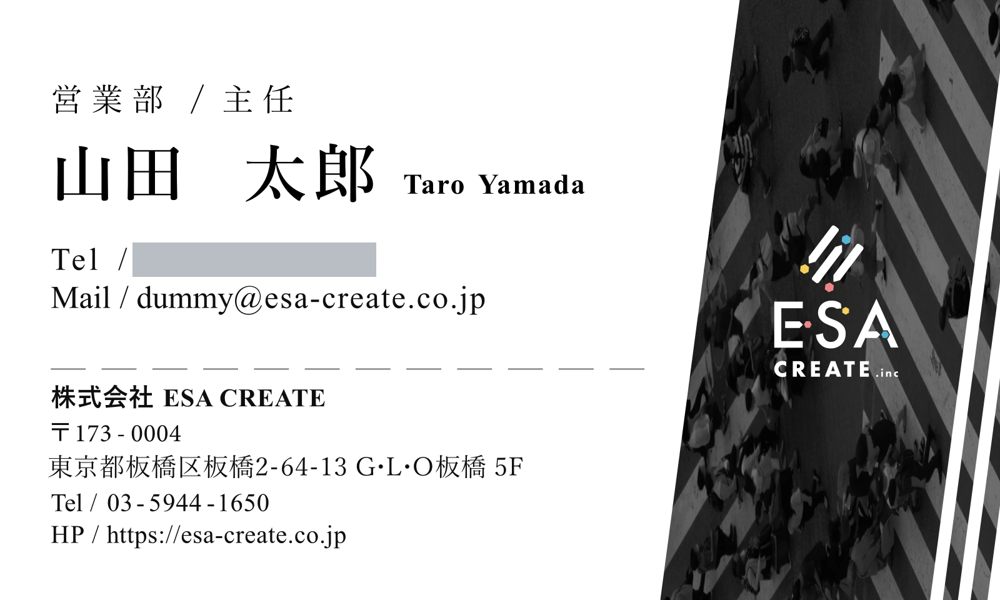
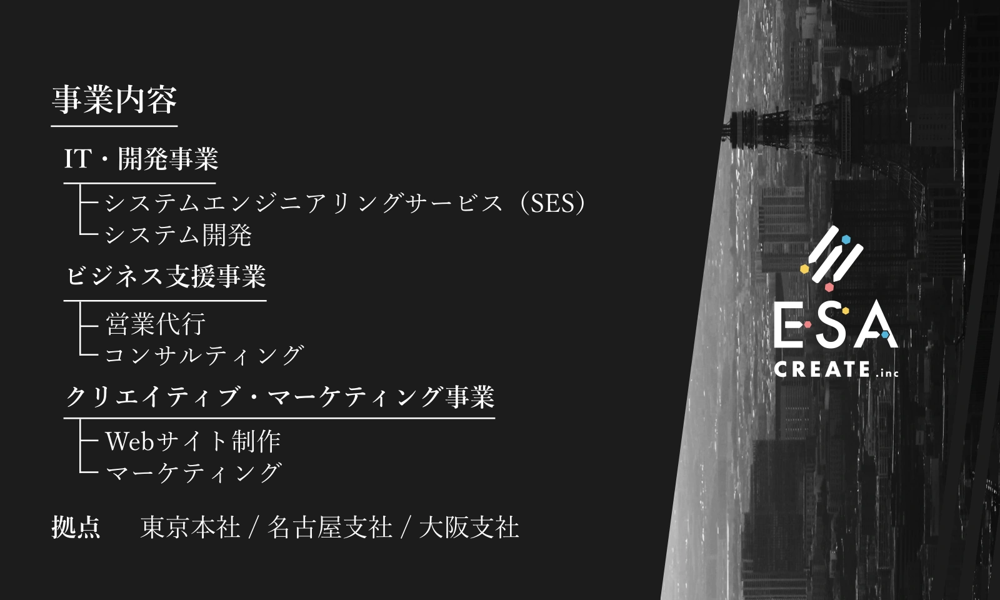
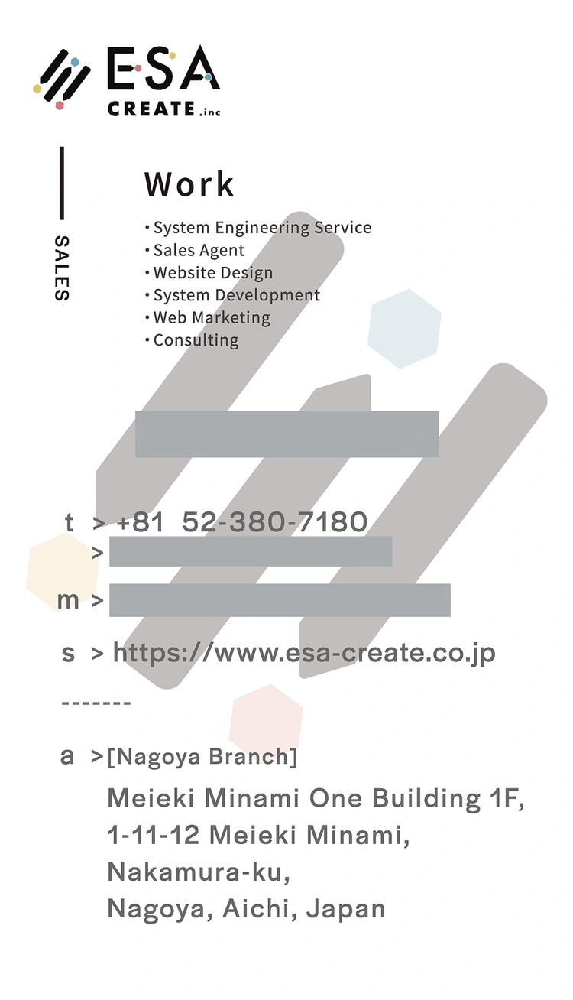
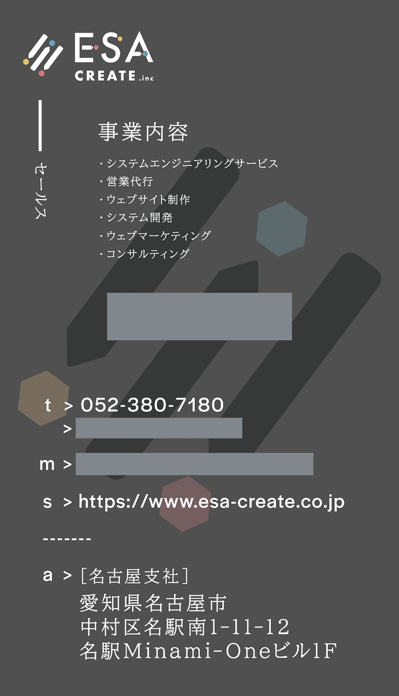
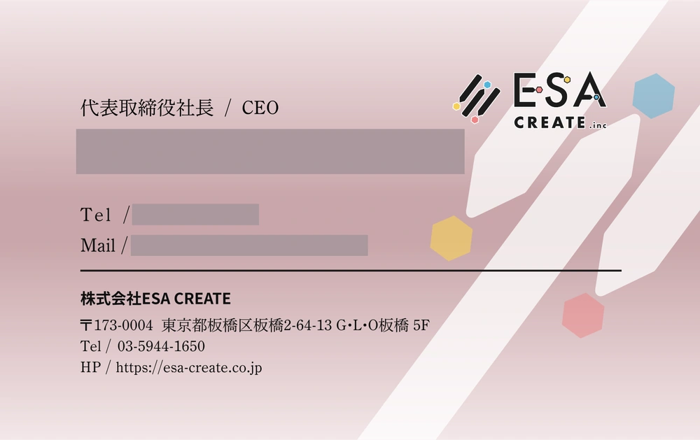
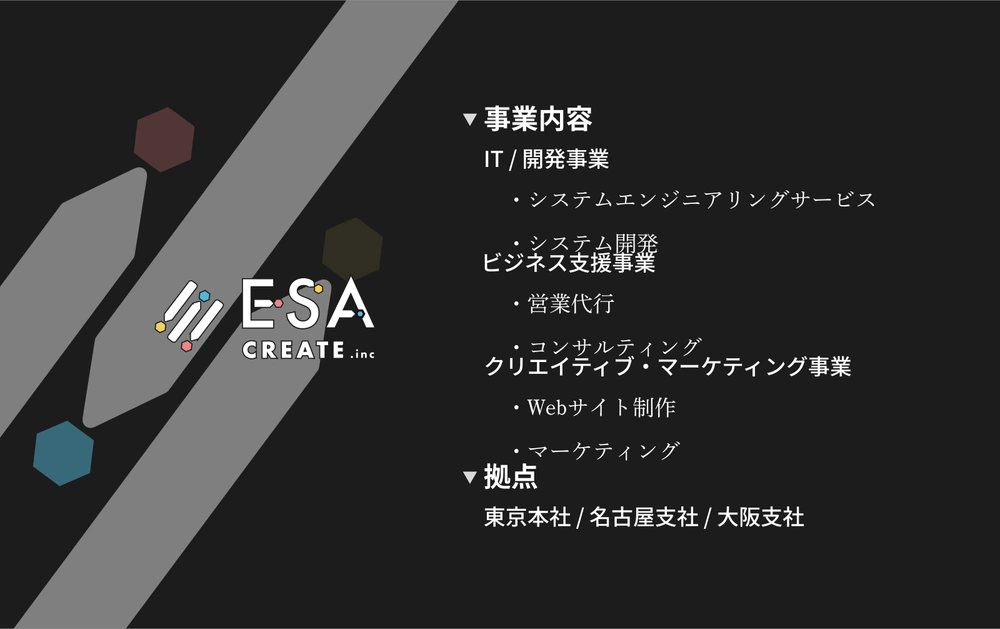
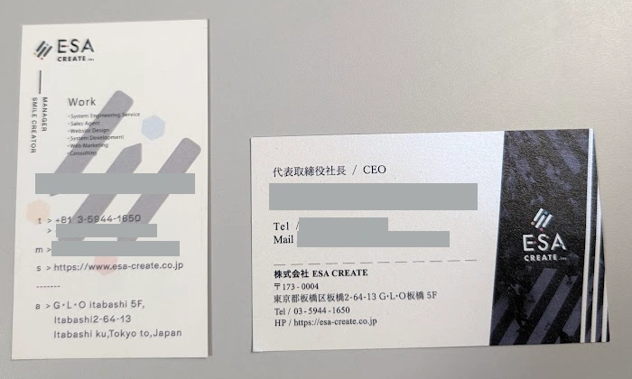
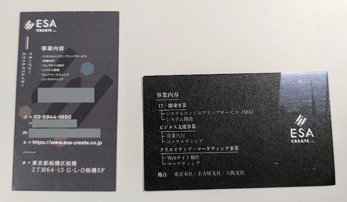

株式会社ESA CREATE名刺リニューアル
利用シーンを踏まえた横型へのリニューアル。
デザインの検討から、印刷用データの作成まで。


完成デザインの氏名・メールは提供データ内のダミー情報です。掲載画像の個人情報はマスクしています。
クライアント
株式会社ESA CREATE
制作物
両面名刺 / 横型・91×55mm
使用ツール
Figma / Adobe Illustrator
担当範囲
名刺デザイン、デザイン案の作成・調整、Figmaでのデザイン制作、Illustratorでの印刷用データ作成（CMYK調整、印刷会社指定フォーマットへの配置、塗り足し作成、トンボ設定、テキストのアウトライン化、画像解像度確認、入稿用PDF書き出し）
完成後
印刷・納品済み。現在は代表取締役社長が使用。
株式会社ESA CREATEの名刺リニューアルを担当しました。
従来の名刺は縦型で、国内では一般的ではない海外仕様のサイズを採用していました。ITベンチャーらしい個性がある一方、実際のビジネスシーンではサイズや情報の並びに扱いづらさがありました。
また、代表交代以前から同じデザインを使用していたこともあり、新年度を迎えるタイミングで名刺全体をリニューアルすることになりました。
代表取締役を含む全社員が、SESの上位会社との商談や他社との交流会、マーケティング顧客との打ち合わせなどで使用することを想定し、国内で一般的な91×55mmの横型名刺へ変更しています。
Before｜旧デザイン
個性的な縦型 / 海外仕様


After｜リニューアル後
利用シーンを踏まえた横型 / 91×55mm
画像はレイアウトの比較用です。実際のサイズ差は、下部の実物比較写真で紹介しています。
依頼側からは、事業内容を分かりやすく伝えることに加え、東京・名古屋・大阪の拠点情報を掲載し、会社としての規模感も伝えたいという要望がありました。
名刺交換の場で、まず「どこの会社の誰なのか」がすぐに分かるよう、表面には会社ロゴを大きく配置し、氏名・役職・連絡先・会社情報をまとめています。
裏面には事業内容と拠点情報を整理し、表面を人物情報、裏面を会社情報として役割を分けました。限られたスペースの中でも情報が混在せず、必要な内容を順番に確認できる構成を意識しています。
配色は白と黒を基調としました。
公式Webサイトで使用されていたモノクロ写真の雰囲気を名刺にも取り入れ、Webサイトとの統一感を持たせながら、IT企業らしいシャープな印象になるよう調整しています。
モチーフの展開
デザイン全体のアクセントとして、右上がりに伸びる3本のラインを取り入れています。
会社ロゴには、鉛筆のようにも見える3本の斜めのラインが使われています。また、公式Webサイトのトップページには人が行き交う横断歩道の写真が使用されており、こちらにも複数の線の要素があります。
そこで、ロゴの3本線と横断歩道のラインを結びつけ、名刺のあしらいとして展開しました。
掲載する写真も同じ角度で斜めにトリミングし、ラインと写真の方向をそろえることで全体にまとまりを持たせています。右上がりの構成には、会社がこれから成長していくイメージも重ねました。
- 3案制作
- 2案へ絞り込み
- 1案へ絞り込み
- 依頼者へ仮提出
- フィードバック
- 別案を再検討
- 写真・細部を再調整
- 最終案決定
制作開始時は、ヒアリングを担当していた先輩デザイナーと相談しながら方向性を決めました。
最初から1案に絞るのではなく、異なる方向性のデザインを3案並行して制作。フィードバックを受けながら2案、1案と段階的に絞り込み、依頼者へ仮提出しました。
その後は依頼者の要望を反映しながら、カラーや使用フォントを変更した複数のパターンを確認し、調整を進めています。
最終段階では、依頼者の意向により、途中まで制作していたもう一つのデザイン案を改めて検討することになりました。そこから写真の選定や細部を見直し、ブラッシュアップした案が最終デザインとして採用されました。
当初進めていた案に固定せず、フィードバックや依頼者の意向に合わせて方向性を切り替えながら完成まで進めています。


- 1. Figmaデザイン制作・調整
- 2. Adobe Illustrator色・塗り足し・トンボ・文字・画像の調整と確認
- 3. 入稿用PDF印刷会社へ送れる状態で納品
デザイン制作はFigmaで行い、デザイン確定後はAdobe Illustratorを使用して印刷用データへ調整しました。
Illustratorでは、
- CMYKへのカラー調整
- 印刷会社指定フォーマットへの配置
- 塗り足し領域の作成
- トンボの設定
- テキストのアウトライン化
- 使用画像の解像度確認
- 入稿用PDFの書き出し
を行っています。
最終的に、そのまま印刷会社へ送れる状態までデータを整え、依頼者へ納品しました。


実物の確認用に撮影した写真です。余分な余白をトリミングし、個人情報をマスクしています。
完成と振り返り
完成した名刺は実際に印刷され、現在は代表取締役社長が使用しています。
実物を手に取って確認したことで、モニター上で見るデザインと、実寸の印刷物では見え方が異なることを実感しました。
画面上では問題なく見えていた文字も、実際の名刺サイズで確認すると、もう少しフォントサイズを大きくした方が読みやすいと感じる部分がありました。
今回の制作を通して、印刷物では画面上の見栄えだけではなく、実寸での文字サイズや可読性まで意識して設計することの重要性を学びました。